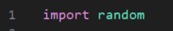
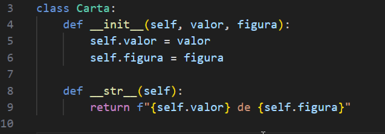
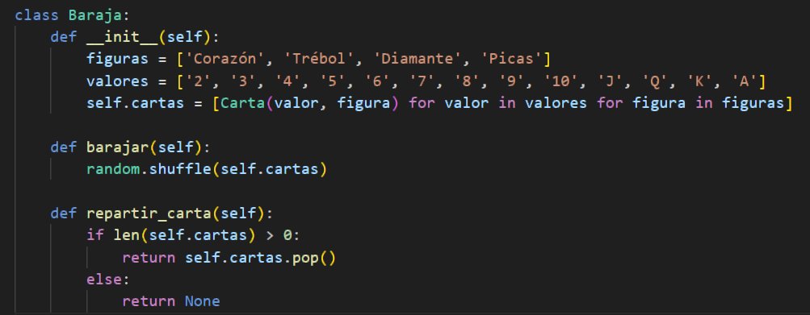
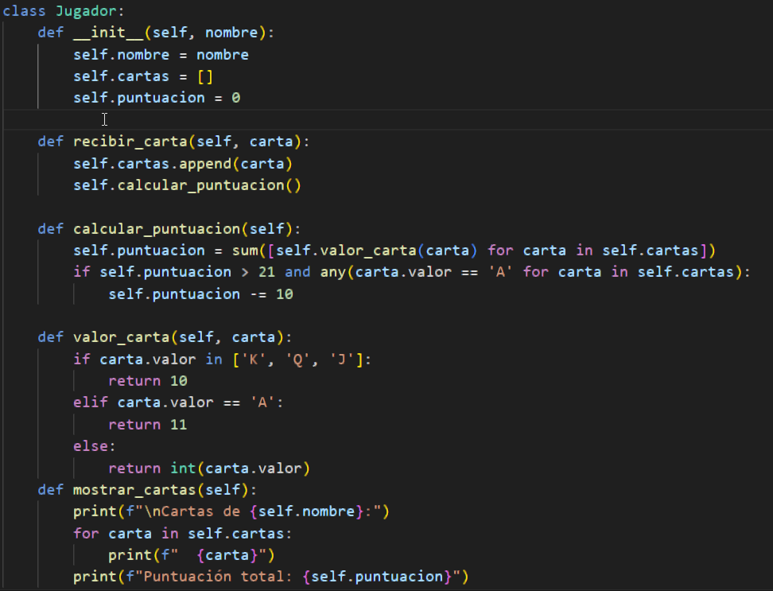
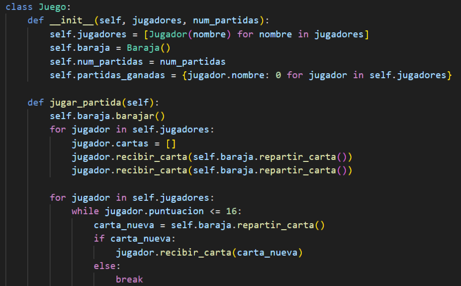
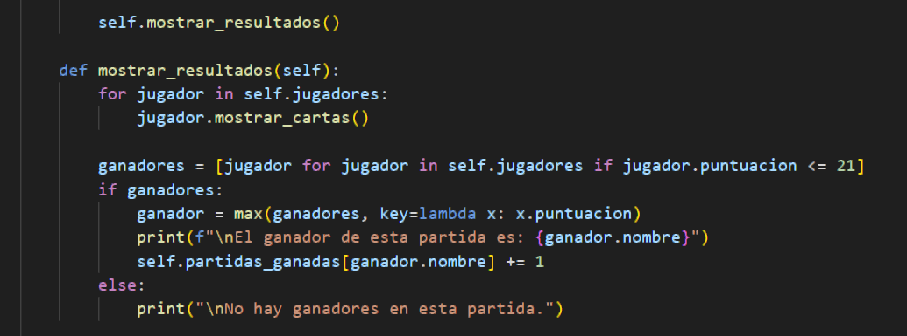
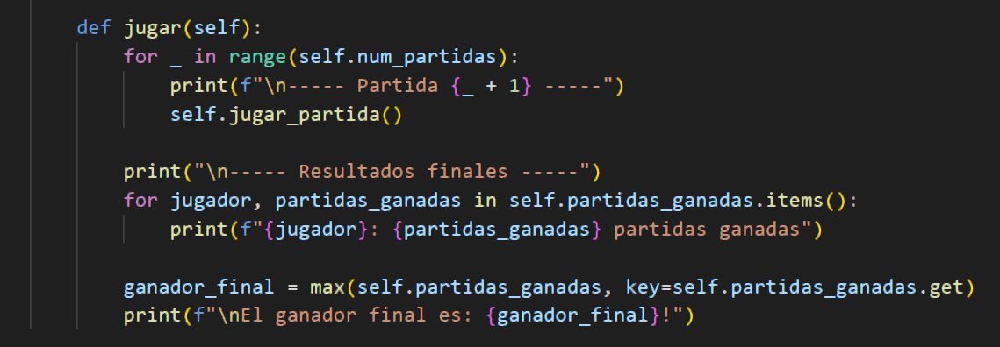
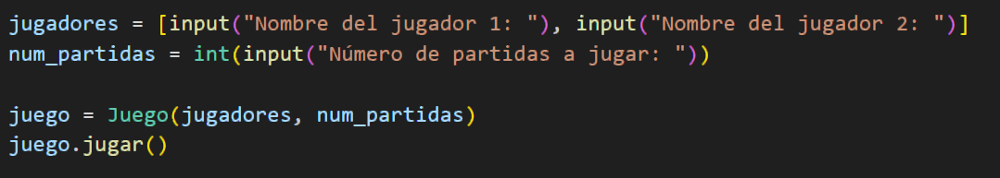

Introducción a Programación Orientada a Objetos.
Durante el semestre, vimos las bases del lenguaje de programación de Python, además de algunas cosas básicas dentro de la Programación Orientada a Objetos. Este código es una muestra de la culminación de esta Unidad De Aprendizaje. Lo que hace este código es simular un juego de blackjack, donde habrá 2 jugadores, además de que se puede seleccionar el nombre de los jugadores y el número de partidas a jugar. Después se repartirán cartas al azar y de esta manera se decidirá al ganador.
1. Iniciamos el código importando la biblioteca random, esto para que los valores repartidos sean aleatorios.
2. Después se crea la clase carta, la cual tiene el init con los valores self, valor y figura, seguidamente se define el str con el valor de self el cual escribe algo que podamos leer, por ejemplo una instancia carta con el valor de un as y la figura espada, entonces se imprimirá un As de espadas.
3. Posteriormente creamos la clase baraja, la cual le da nombre a las figuras y un valor, después defininimos barajear, la cual hace un shuffle el cual hace que barajee la baraja, después devuelve la última carta de la baraja, si la baraja esta vacía devuelve none.
4. A continuación, se crea la clase jugador, usamos init y le ponemos los valores de self, nombre, cartas y puntuación, después el método recibir carta agrega una lista de cartas y llama al método calcular puntuación para actualizar el puntaje de cada jugador, el calcular promedio calcula la puntuación total del jugador sumando los valores de las cartas que le hayan asignado, además si la puntuación supera los 21 y el jugador tiene un as, se le resta 10 puntos de la puntuación, después el método valor carta toma una carta y devuelve su valor numérico según las reglas del juego, los valores K, Q y J valen 10 puntos, mientras que el as vale 11 y las demás cartas su propio valor numérico, luego el mostrar cartas imprime en la consola las cartas que tiene el jugador y su puntuación total.
5. Seguidamente se define la clase juego, la cual tiene el init con los valores de jugadores, baraja, número de partidas y partidas ganadas, luego se define la función jugar partida. Antes de comenzar se barajea la baraja con self baraja barajear, el jugador recibe 2 cartas iniciales, después se hace un bucle for para cada jugador, dentro de ese bucle hay un while que se ejecuta mientras la puntuación de el jugador sea menor o igual a 16, el bucle se rompe cuando la puntuación de el jugador sea más de 16.
6. Después de todo eso, el método mostrar resultados es ejecutado, el cual muestra las cartas de cada jugador y determina si hay ganador en la partida, luego se crea una lista llamada ganadores que contiene a los jugadores que su puntuación es menor o igual a 21, comprueba si hay ganadores en la lista, si hay los encuentra con la función max, imprime el nombre del ganador y actualiza el diccionario self partidas ganadas incrementando en 1 el número de partidas ganadas para el ganador.
7. Luego la función jugar se encarga de contar el número de partida específica en self num partidas, usa un bucle for para iterar el número de partidas y después imprime un mensaje indicando el número de la partida y luego entra la función self jugador partida para llevar acabo la partida, después imprime los resultados finales, itera sobre el diccionario self partidas ganadas para imprimir el número de partidas ganadas por cada jugador y determina el ganador final con rl número mayor de partidas ganadas y ya imprime el nombre.
8. En esta parte del código se encarga de la interacción del usuario para recopilar la información antes de empezar el juego, usa la función input para que ingrese el nombre de el primer jugador al igual que el segundo jugador y el número de partidas a jugar, y con los datos ya se ejecuta el juego.
9. Fin